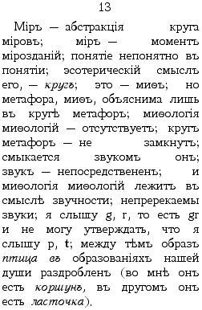
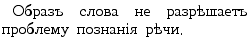

Glossolalia (Section 13)

The world is -- an abstraction of the circle of worlds; the world is -- an instant of creation; a concept is incomprehensible in concept; its esoteric meaning, is -- a circle; this is -- myth; but metaphor, myth, can only be clarified inside the circle of metaphors; a mythology of mythology is -- absent; the circle of metaphors is -- not enclosed; it is closed by sound; sound is -- immediate; and the mythology of mythologies lies in the meaning of sound; sounds are indisputable; I hear a g, r, that is gr and I cannot assert, that I hear p, t; besides that the image of bird [ptitsa] in Russian in the formations of our soul has been shattered (inside me it is a kite, in another it is a sparrow).

The image of a word does not resolve the problem of cognition of speech.